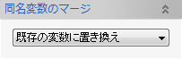

アクティブなスケッチ内に、別のドキュメントのスケッチ要素を読み込みます。
インポートするEvo.Shipモデルファイルを選択します。
同名変数のマージオプションを選択し、OKボタンで要素を読み込みます。

ドキュメント内の変数の値で置き換えます。インポートされる形状が変わる可能性があります。
インポートするファイル内の変数の値で既存の変数を上書きします。既存の変数を使用している形状が変わる可能性があります。
全て新しい変数としてインポートされます。 変数名は「（変数名）_（数値）」となります。
同じ値の変数の場合、ドキュメント内の変数に置き換えられます。 違う値の場合は新しい変数としてインポートされます。 新しい変数の場合は、名前が「（変数名）_（数値）」となります。